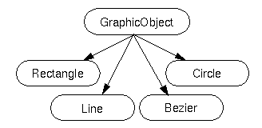

OOP in Java: Subclasses and Inheritance |
Final Classes
You can declare that your class is final; that is, that your class cannot be subclassed. There are (at least) two reasons why you might want to do this: security reasons and design reasons.
You can use the final keyword in a method declaration to indicate to the compiler that the method cannot be overridden by subclasses.
Classes, which implement abstract concepts and should not be instantiated, are called abstract classes. An abstract class is a class that can only be subclassed--it cannot be instantiated.
An abstract class may contain abstract methods, that is, methods with no implementation. In this way, an abstract class can define a complete programming interface thereby providing its subclasses with the method declarations for all of the methods necessary to implement that programming interface.
Abstract classes provide a way to represent objects at a conceptual generic level.
In a graphic library, you can create an abstract class to represent a generic graphic object and a method for drawing it. This method is them only implemented on the derived classes.
